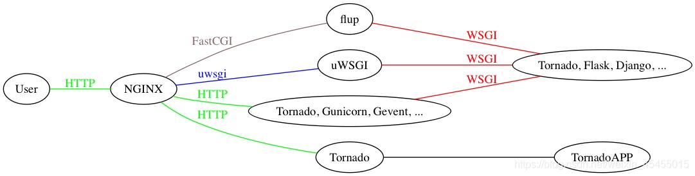

HTTP
在Web应用中，服务器把网页传给浏览器，实际上就是把网页的HTML代码发送给浏览器，让浏览器显示出来。而浏览器和服务器之间的传输协议是HTTP，所以：
- HTML是一种用来定义网页的文本，会HTML，就可以编写网页；
- HTTP是在网络上传输HTML的协议，用于浏览器和服务器的通信。
HTML
网页就是HTML？这么理解大概没错。因为网页中不但包含文字，还有图片、视频、HTML5小游戏，有复杂的排版、动画效果，所以，HTML定义了一套语法规则，来告诉浏览器如何把一个丰富多彩的页面显示出来。
<html>
<head>
<title>Hello</title>
</head>
<body>
<h1>Hello, world!</h1>
</body>
</html>
CSS简介
CSS是Cascading Style Sheets（层叠样式表）的简称，CSS用来控制HTML里的所有元素如何展现，比如，给标题元素<h1>加一个样式，变成48号字体，灰色，带阴影：
<html>
<head>
<title>Hello</title>
<style>
h1 {
color: #333333;
font-size: 48px;
text-shadow: 3px 3px 3px #666666;
}
</style>
</head>
<body>
<h1>Hello, world!</h1>
</body>
</html>
JavaScript简介
JavaScript虽然名称有个Java，但它和Java真的一点关系没有。JavaScript是为了让HTML具有交互性而作为脚本语言添加的，JavaScript既可以内嵌到HTML中，也可以从外部链接到HTML中。如果我们希望当用户点击标题时把标题变成红色，就必须通过JavaScript来实现：
<html>
<head>
<title>Hello</title>
<style>
h1 {
color: #333333;
font-size: 48px;
text-shadow: 3px 3px 3px #666666;
}
</style>
<script>
function change() {
document.getElementsByTagName('h1')[0].style.color = '#ff0000';
}
</script>
</head>
<body>
<h1 onclick="change()">Hello, world!</h1>
</body>
</html>
CGI
CGI（Common Gateway Interface）通用网关接口，是一个协议，是外部应用程序（CGI 程序）与 Web 服务器之间的接口标准，该协议定义了 Web 服务器调用外部应用程序的时候需要输入的参数，和给 Web 服务器的返回结果。
通俗来说，它规定一个程序该如何与 Web 服务器程序之间通信，从而可以让这个程序跑在 Web 服务器上。
每当客户请求 CGI 的时候，WEB服务器就请求操作系统生成一个新的CGI解释器进程（如 php-cgi.exe），CGI 的一个进程则处理完一个请求后退出，下一个请求来时再创建新进程。当然，这样在访问量很少没有并发的情况也行。但当访问量增大，并发存在，这种方式就不适合了，于是就有了FastCGI
FastCGI
FASTCGI 是 Web 服务器（ex:Nginx）和语言解释器（ex:uWsgi）两者底层的通信协议的规范，是对CGI的开放的扩展。
CGI的一个扩展，像是一个常驻（long-live）型的CGI ，废除了 CGI fork-and-execute （来一个请求 fork 一个新进程处理，处理完再把进程 kill 掉）的工作方式，转而使用一种长生存期的方法，减少了进程消耗，提升了性能。
而FastCGI 则会先 fork 一个 master 进程，解析配置文件，初始化执行环境，然后再 fork 多个 worker 进程（与 Nginx 有点像），当 HTTP 请求过来时，master 进程将其会传递给一个 worker 进程，然后立即可以接受下一个请求，这样就避免了重复的初始化操作，效率自然也就提高了。
而且当 worker 进程不够用时，master 进程还可以根据配置预先启动几个 worker 进程等着；当空闲 worker 进程太多时，也会关掉一些，这样不仅提高了性能，还节约了系统资源
WSGI
WSGI，（WEB SERVER GATEWAY INTERFACE），Web服务器网关接口，是一种Web服务器网关接口，它是一个Web服务器（如Nginx，uWSGI等服务器）与Web应用（如Flask框架写的程序）通信的一种规范。当前运行在WSGI协议之上的Web框架有Bottle，Flask，Django。
uwsgi
同WSGI一样是一种通信协议
uwsgi协议是一个uWSGI服务器自有的协议，它用于定义传输信息的类型（type of information），每一个uwsgi packet前4byte为传输信息类型描述，它与WSGI相比是两样东西。
uWSGI
它是一个Web服务器，它实现了WSGI协议、uwsgi、http等协议。用于接收前端服务器转发的动态请求并处理后发给 Web 应用程序。
uWSGI是使用C编写的，显示了自有的uwsgi协议的Web服务器。它自带丰富的组件，其中核心组件包含进程管理、监控、IPC等功能，实现应用服务器接口的请求插件支持多种语言和平台，比如WSGI、Rack、Lua WSAPI，网管组件实现了负载均衡、代理和理由功能。
uWSGI也可以当做中间件。
- 如果是Nginx+uWSGI+App，那uWSGI就是一个中间件
- 如果是uWSGI+App，那它就是服务器

假设我们使用 Python 的 Django 框架写了一个网站，现在要将它挂在网上运行，我们一般需要：
- Nginx 做为代理服务器：负责静态资源发送（js、css、图片等）、动态请求转发以及结果的回复。
- uWSGI 做为后端服务器：负责接收 Nginx 转发的请求并处理后发给 Django 应用以及接收 Django 应用返回信息转发给 Nginx。
- Django 应用收到请求后处理数据并渲染相应的返回页面给 uWSGI 服务器。
一个Django应用，通过WSGI协议连接uWSGI服务器，uWSGI服务器实现WSGI、http等协议，通过uwsgi协议和Nginx服务器实现http的动态请求和转发以及结果。
下面是一个简单的WSGI应用程序示例：
def application(environ, start_response):
status = '200 OK'
response_headers = [('Content-type', 'text/plain')]
start_response(status, response_headers)
return [b'Hello, World!']
使用 uwsgi 启动该应用：
uwsgi --http :8080 --wsgi-file codes/03_python/p_05.py
Nginx
一个普通的个人网站，访问量不大的话，当然可以由 uWSGI 和 Django 构成。但是一旦访问量过大，客户端请求连接就要进行长时间的等待。这个时候就出来了分布式服务器，我们可以多来几台 Web 服务器，都能处理请求。
但是谁来分配客户端的请求连接和 Web 服务器呢？Nginx 就是这样一个管家的存在，由它来分配。这也就是由 Nginx 实现反向代理，即代理服务器。
Nginx 是一个 HTTP 和反向代理服务器
- 正向代理：正向的就是由浏览器主动的想代理服务器发出请求，经代理服务器做出处理后再转给目标服务器
- 反向代理：反向的就是不管浏览器同不同意，请求都会经过代理服务器处理再发给目标服务器
使用Nginx作为反向代理服务器的好处：
- 安全
不管什么请求都要经过代理服务器，可以避免外部程序直接攻击Web服务器
- 负载均衡
根据请求情况和服务器负载情况，将请求分配给不同的Web服务器，保证服务器性能
- 提高Web服务器的IO性能
请求从客户端传到Web服务器是需要时间的，传递多长时间就会让这个进程阻塞多长时间，而通过反向代理，就可以由反向代理完整接受该请求，然后再传给Web服务器，从而保证服务器性能，而且有的一些简单的事情（比如静态文件）可以直接由反向代理处理，不经过Web服务器。
ASGI
异步网关协议接口，一个介于网络协议服务和Python应用之间的标准接口，能够处理多种通用的协议类型，包括HTTP，HTTP2和WebSocket。
然而目前的常用的WSGI主要是针对HTTP风格的请求响应模型做的设计，并且越来越多的不遵循这种模式的协议逐渐成为Web变成的标准之一，例如WebSocket。
ASGI尝试保持在一个简单的应用接口的前提下，提供允许数据能够在任意的时候、被任意应用进程发送和接受的抽象。并且同样描述了一个新的，兼容HTTP请求响应以及WebSocket数据帧的序列格式。允许这些协议能通过网络或本地socket进行传输，以及让不同的协议被分配到不同的进程中。
WSGI和ASGI的区别 WSGI是基于HTTP协议模式的，不支持WebSocket，而ASGI的诞生则是为了解决Python常用的WSGI不支持当前Web开发中的一些新的协议标准。同时，ASGI对于WSGI原有的模式的支持和WebSocket的扩展，即ASGI是WSGI的扩展。
Web 服务器和 Web框架
Web服务器即用来接受客户端请求，建立连接，转发响应的程序。至于转发的内容是什么，交由Web框架来处理，即处理这些业务逻辑。如查询数据库、生成实时信息等。Nginx就是一个Web服务器，Django或flask就是Web框架。
那么如何实现uWSGI和WSGI的配合呢？如何做到任意一个Web服务器，都能搭配任意一个框架呢？这就产生了WSGI协议。只要Web服务器和Web框架满足WSGI协议，它们就能相互搭配。所以WSGI只是一个协议，一个约定。而不是Python的模块、框架等具体的功能。
而uWSGI，则是实现了WSGI协议的一个Web服务器。即用来接受客户端请求，转发响应的程序。实际上，一个uWSGI的Web服务器，再加上Django这样的Web框架，就已经可以实现网站的功能了。